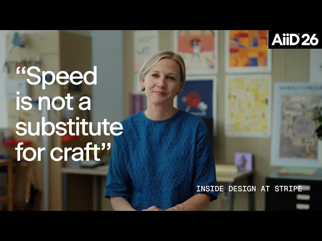
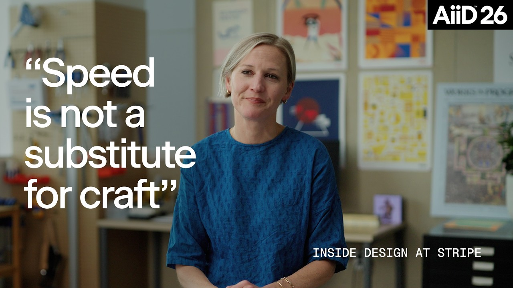

中文全文译文：由「译文工坊」根据英文原文自动翻译生成，供学习参考。结构与措辞以译文为准；想看原始论述，请点上方「阅读原文」。

Designer Fund
在我们的 AI in Design 案例研究系列中，我们将探讨领先的设计团队如何为 AI 时代调整自己的工作方式。今天，我们走进 Stripe：在这里，实验自下而上涌现，有价值的新工作流凭实力赢得更广泛的应用。
Stripe 设计负责人 Katie Dill 最初鼓励团队尝试 AI 时，传达的信息很简单：去试试这些工具。但一开始，这并没有带来多大改变。
设计师们都很忙，觉得没有余地去冒险尝试陌生的工作流。他们不确定哪些工具是安全的，自己是否被允许使用，也不知道订阅费用由谁来付。这是很有价值的一课：光有热情并不能推动实验，围绕实验的组织支持同样重要。
如何在不规定大家具体怎么工作的前提下，营造出一种实验文化？
Stripe 改变了做法，把重点放在清除采用过程中的现实障碍上：批准了一大批工具，专门划出时间供大家探索，并让各团队的内部实验彼此可见。
“我们把餐桌摆好，让派对得以开始，”Katie 说，“我们尽可能让团队用上更多工具，剩下的交给团队自己发挥。”


这种做法折射出公司运作核心中的一种张力。Stripe 立志成为世界上最快的公司，同时又要为所做的一切注入匠心与美感。挑战在于：既要给人们实验的空间，又不能过早把流程固化，也不能把快速产出误当成完成的作品。
我们与 Katie 以及 Stripe 设计团队的成员进行了交流，包括产品设计师 Ryan Spencer 和 Sadhika Billa、内容设计师 Chris Greer，以及 Stripe Press 设计师 Pablo Delcan，了解 Stripe 如何拿捏这种平衡。
你将了解到：
- 时间、工具获取和同伴可见性对有效使用 AI 的重要性
- 如何把有用的实验变成可重复的工作方式
- Stripe 如何在保持速度的同时，不把快速产出误当成完成的作品
留出尝试的空间
Katie 把 AI 比作合成器的发明。在合成器出现之前，没有哪位作曲家会写出需要每秒敲击钢琴键 50 次的音乐。合成器不只是让音乐制作得更快，它还让全新的音乐类型成为可能。
她在 AI 身上看到了同样的潜力：设计师可以探索更多方向，更快把想法变成现实，并验证那些过去成本太高而无法尝试的点子。但首先，他们需要时间来熟悉这件“乐器”。
Stripe 着力清除阻碍人们尝试新事物的三大障碍：
- 专属时间：每季度一次的“AI-cation”日，让设计师明确获得权限，可以暂时放下日常工作，提升自己使用 AI 的水平。他们可以试用新的 AI 工具、为某个想法制作原型，或者快速做一个微型工具，解决自己的痛点。
- 畅通的使用渠道：Stripe 预先批准了大量软件，安全审查和费用审批也都提前处理好，没有人需要被繁琐的行政流程卡住。
- 公开的实验：团队演示、午餐分享会和创始人主持的炉边谈话，让大家经常有机会展示自己正在做的事。
分享，才能让一次性的实验变成其他人也能使用的东西。Stripe 为自定义智能体和插件维护了简单的内部目录和排行榜，让任何人都能轻松找到工具、加以改造，并在行之有效的基础上继续构建。
这种自下而上的发现方式契合 Stripe 的运作文化。公司雇用主观能动性强的人，并在解决问题的方式上给予他们相当大的自由。设计师隶属于同一个中央组织，却分别在各自的产品团队中工作，因此每个团队都有空间形成适合自身工作的方法。
Katie 称之为“多用胡萝卜，少用大棒”。领导层负责营造环境、扫清行政障碍，并向大家展示可能性。至于之后会发生什么，就由设计师自己决定。

把反复出现的摩擦变成共享基础设施
当更多人有了实验的空间，他们开始着手解决自己反复遇到的问题。
ProtoDash 源于 Stripe 设计评审中的一个常见问题。大家用现成的 AI 工具快速搭建原型，但产出往往字体不对、凭空捏造不存在的组件，还带着团队口中的“blurple slop”。
Stripe 早已有一套完整的设计系统，名为 Sail。设计经理 Owen Williams 认为，AI 应当用这些组件来构建，而不是自己编造粗糙的近似品。
他创建了 ProtoDash 来弥合这一差距。第一版把 Sail 的组件库与一套严格的规则结合起来，告诉 AI 模型如何正确使用这些组件。随后，Owen 把工具直接接入 Stripe 的开发基础设施，将配置时间缩短到两分钟以内。再后来，他又把工具搬进浏览器，推出 ProtoDash Studio，让任何人都无需接触代码编辑器，就能生成、二次创作并评审可运行的原型。

产品设计师 Ryan Spencer 和 Sadhika Billa 最近用 ProtoDash 探索了一个实时欺诈监控仪表盘的概念。只用一条提示词，他们就生成了一个完全可交互的布局，里面填充了逼真的交易风险、欺诈率和被拦截支付的数据。他们不必再靠静态界面去解释概念，而是能立刻把一个可运行的体验交到用户面前。
这种易用性也让非设计师用上了这个工具。产品经理如今是 ProtoDash 最活跃的用户之一，他们在请工程师写代码之前很早就用它和客户一起验证想法。
事实上，产出的质量已经高到这样的程度：在最近的一个 Radar 项目中，ProtoDash 原型成了工程团队的主要依据，这在 Owen 担任设计经理的职业生涯中还是头一回。而且，Stripe 的任何人都可以为这个工具贡献改进，因此每做一个项目，ProtoDash 都会变得更好。

另一个名为 Dante 的内部工具则应对另一种约束：在公司每天产出两三千条新文案的情况下，维持 Stripe 的写作标准。
Stripe 在意的细节小到句子大小写（sentence case）、牛津逗号，以及连字符与 en dash 的区别。但内容设计师已无法再靠人工逐一审查，否则只会成为瓶颈。
内容设计师 Chris Greer 可以把产品界面的截图拖进终端，请 Dante 来审查。这个工具会标出使用了标题式大小写（title case）的标题、缺失的牛津逗号，以及规范要求使用 en dash 却用了连字符的地方。由于 Dante 基于线上代码工作，Chris 可以让它直接应用修改，并将改动提交给工程团队评审。
“我们不想因为发布得更多、更快，就让质量标准松懈，”Chris 说。“问题变成了：如何设计一套系统，在这种新的规模下依然做到这一点。”
Katie 将目标描述为帮助大家“自然而然地落入成功之坑”。系统不再依赖每个人记住所有规范，而是在工作进行的当下，让正确的选择变得轻而易举。

Dante 的插件更新日志记录了 Stripe 各团队贡献的新技能（skill），让共享的内容标准更易于发现和使用。
ProtoDash 和 Dante 解决的是不同的问题，但走过的路径相似。两者都始于一位贴近工作的人，去解决一个反复出现的烦恼。当其他人发现成果好用之后，Stripe 就为这个实验提供了扩散的途径。
先做“屋顶计划”，再谈“登月计划”
允许大量实验，又带来另一个问题：什么时候该让其中某一个成为标准？Stripe 在回答这个问题上一直刻意放慢脚步。
Katie 把这种理念形容为“做屋顶计划（roof shots），而非登月计划（moonshots）”。生成式 AI 刚进入 Stripe 的产品时，人们很容易设想出一种能理解每位客户的通用体验。但太多根本性的问题仍然没有答案。
于是，团队从小而聚焦的项目入手。Radar 增加了用于管理欺诈规则的对话式工具。Docs 为开发者指南带来了自然语言搜索。Dashboard 团队则通过 Stripe Sigma 测试了自己的方案。
对于一家以产品间高度一致著称的公司来说，这意味着要接受一个暂时的取舍：早期的实验可能无法完美地拼合在一起。Katie 认为这个取舍是值得的。让每种体验各自独立发展，团队就有时间在具体上下文中弄清什么行得通，等通用模式浮现之后，Stripe 就能把最强的想法整合到一起。
过早标准化，会让组织在更好的工作流出现时，仍被困在昨天的工作流里。Roof shots 让早期决策保持小而可逆，同时团队得以了解哪些东西值得规模化。

快不等于完成
几分钟就能做出看起来像模像样的东西，这带来了一个显而易见的诱惑：把快速成形的初稿误认为成品设计。Katie 把 AI 辅助创作比作一棵野蛮生长的树。想法的分枝比以往任何时候都快，但仍然需要一个有品味、有愿景、有独特视角的人，把它们修剪成连贯的整体。
Pablo Delcan 为 Stripe Press 所做的工作，展示了这种修剪在实践中的样子。在设计 The Scaling Era 的封面时，他借助 AI 探索了各种方向，从神经网络塑造的花朵到复杂的数学谜题。有了这些工具，团队不必先花上数天亲手实现，就能判断一个概念是否有潜力。
“概念依然出自我们，最终的封面依然由我们完成，”Pablo 说，“AI 只是压缩了中间那段过程，也就是我过去要花几天时间去验证一个想法是否值得投入的那部分。”
Pablo 也用这些工具做没有即时用途的开放式实验。在一个项目中，他把自己的 OpenClaw 智能体 Echo 连接到一台笔式绘图仪，让它整天持续绘画。智能体生成数字构图，绘图仪再把它们转化为纸上的墨迹。
最终的画作奇特、精细，带有鲜明的实体质感。它们清楚地体现了 Stripe 希望为之留出空间的那类探索：不是自上而下的要求，也不是为了提升效率，而是一位设计师在探究新工具遇上实体媒介时会发生什么。

当 Katie 利用 AI-cation 日探索 Stripe Dashboard 主页的设计思路时，速度与成品之间的区别再次浮现。她把一张纸质草图输入 ProtoDash，几分钟内就得到了一个可运行的界面框架。速度令人惊艳，但也让人很容易高估这第一版结果。
Katie 把这种感觉比作午饭时用微波炉热一个卷饼。90 秒就能吃上，简直像变魔术。可它终究不是一个特别好吃的卷饼。
Stripe 的团队也用同样的审视标准看待 AI 生成的图像。初看之下，结果可能很有说服力，但评审时仍会放大细节，检查光源、阴影和不自然的结构，Katie 称之为“令人抓狂的细节执着”。
她检验 AI 生成作品的标准是：“如果这是我花了两周才做出来的，我会感到自豪吗？”如果答案是否定的，速度就不能证明作品已经完成，它只是在邀请你继续打磨。
领导者也要重新学习
过去，领导力靠经验不断累积：位居高层的人投入工作的时间最长，因此最清楚事情该怎么做。而现在，上个月刚入职的设计师，可能就发现了一款连自己的上级都没听说过的工具。
“在某些情况下，我的建议是：别听领导的，”Katie 说，“他们现在未必懂得那么多。”
她给管理者的建议是什么？重新回到工具中。参加 AI-cation 日，做一个个人小项目或内部小工具。把软件用得足够久，才能体会到哪些地方顺畅，哪些地方依然令人沮丧。
Stripe 的做法在实践中形成了一个闭环。领导者扫清障碍、创造空间；设计师利用这份自由，为日常的摩擦打造真正的解决方案；Stripe 先让这些工具证明自己的价值，再决定是否推广为标准；而领导者始终贴近实际工作，能够辨别哪些值得投入。
把餐桌布置好，派对才有可能举办。

Stripe 如何为好点子的传播腾出空间
AI 改变一切的时代，设计师如何成长：走进 Shopify 的设计团队
下一篇
最新文章